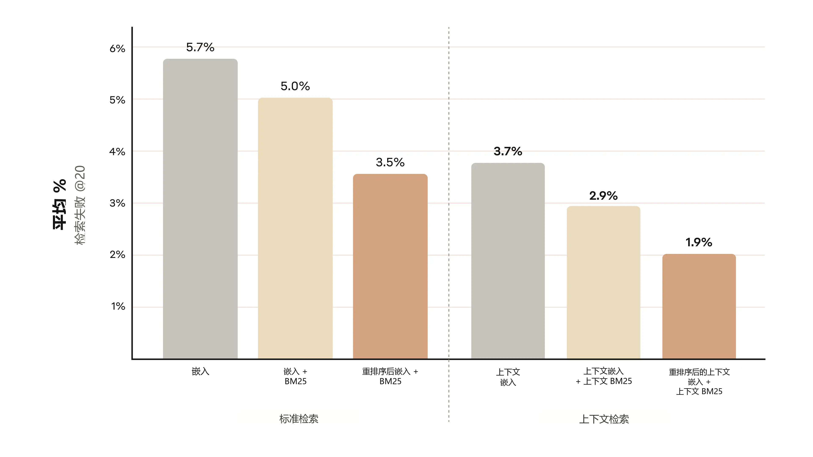
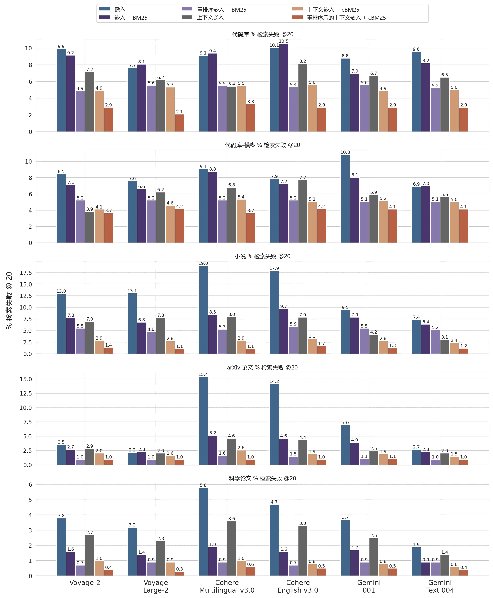
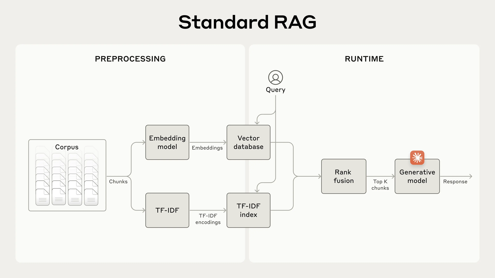
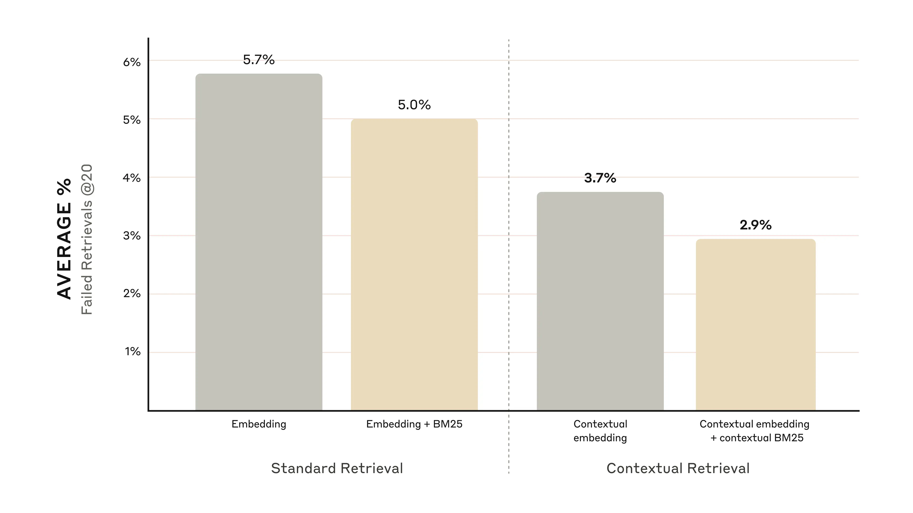
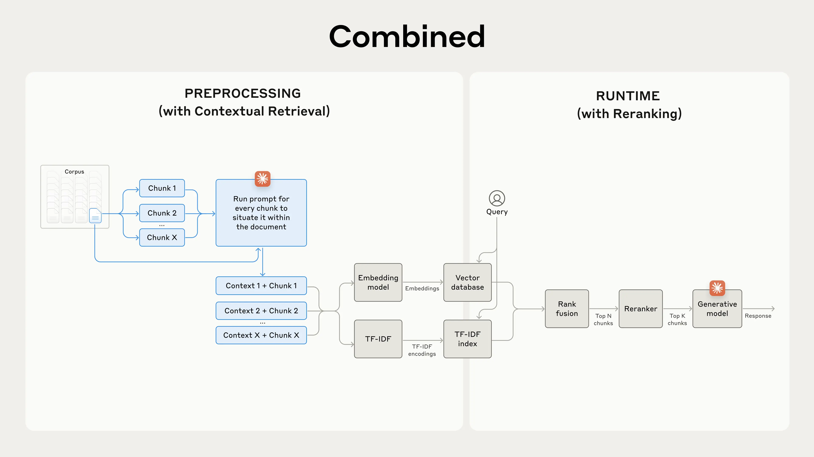
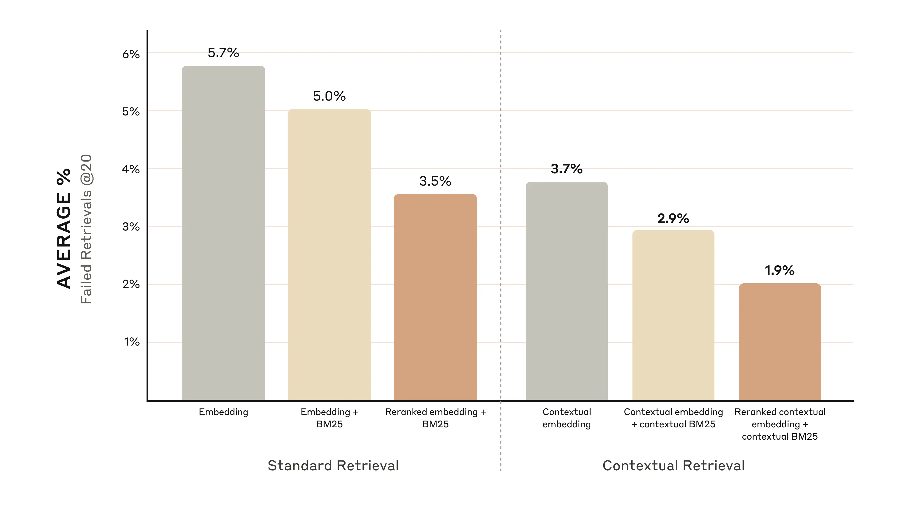
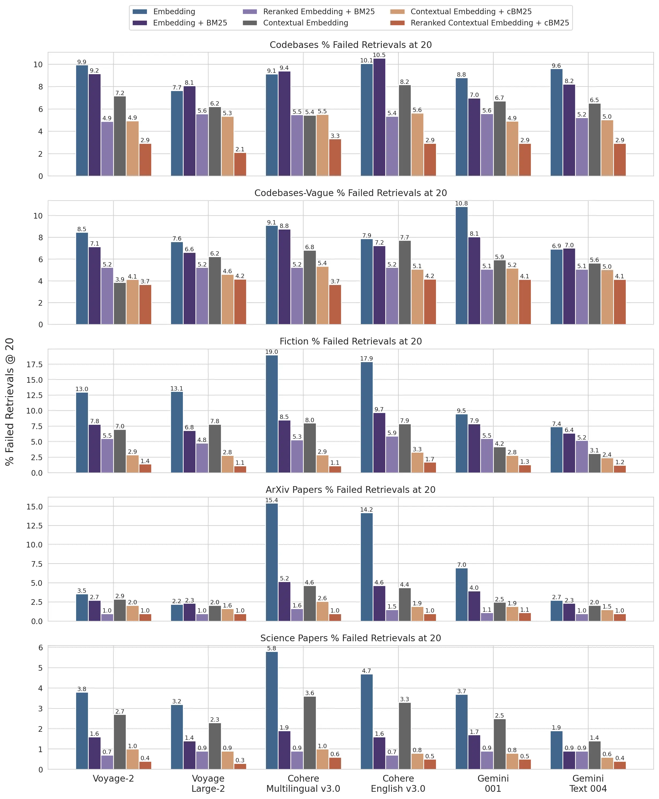

推出上下文检索
📖 中文摘要
专业术语注解
RAG（检索增强生成）：先从知识库检索相关片段再附加到提示词上，用以扩展模型可用的背景知识BM25：建立在TF-IDF之上的词法排序函数，擅长精确匹配唯一标识符与专业术语，弥补嵌入模型的盲区上下文嵌入（Contextual Embeddings）：先用整篇文档为每个文本块生成一段解释性上下文，前置后再做向量嵌入recall@20：前20个检索结果覆盖相关文档的比例，文中以1减recall@20来衡量检索失败率重排序（reranking）：用专门模型对初检得到的头部文本块重新打分，只保留最相关的前K个以提升回答质量📄 中文全文
- 类别： 工程（Engineering）
- 来源： https://www.anthropic.com/research/contextual-retrieval
工程（Engineering） 2024 年 9 月 19 日 已发布 2024 年 9 月 19 日 团队 工程 主题
相关文章 * 工程 2025 年 11 月 26 日 面向长时运行智能体的高效脚手架
阅读更多 要让 AI 模型在特定场景中有用，它往往需要访问背景知识。例如，客服聊天机器人需要了解它被用于的那项具体业务的知识，法律分析机器人则需要了解大量过往案例。 开发者通常用检索增强生成（Retrieval-Augmented Generation，RAG）来增强 AI 模型的知识。RAG 是一种从知识库中检索相关信息并把它附加到用户提示词上的方法，能显著增强模型的回答。问题在于，传统 RAG 方案在编码信息时会把上下文剥离掉，这常常导致系统无法从知识库中检索到相关信息。 在这篇文章里，我们概述一种能大幅改善 RAG 中检索步骤的方法。该方法名为「上下文检索（Contextual Retrieval）」，使用两种子技术：上下文嵌入（Contextual Embeddings）与上下文 BM25（Contextual BM25）。该方法能把检索失败的数量减少 49%，若再结合重排序（reranking），可减少 67%。这代表着检索准确性的显著提升，而检索准确性会直接转化为下游任务中更好的表现。 你可以借助我们的 cookbook，用 Claude 轻松部署属于你自己的上下文检索方案。
关于「直接用更长的提示词」的一点说明
有时候最简单的方案就是最好的。如果你的知识库小于 200,000 个 token（约 500 页材料），你完全可以把整个知识库放进给模型的提示词里，无需 RAG 或类似方法。 几周前，我们为 Claude 发布了提示词缓存，这让这种做法显著更快、更具成本效益。开发者现在可以在 API 调用之间缓存频繁使用的提示词，把延迟降低 2 倍以上、把成本降低最多 90%（可以阅读我们的提示词缓存 cookbook了解其原理）。 不过，随着知识库增长，你会需要一个更具可扩展性的方案。这正是上下文检索的用武之地。
RAG 入门：扩展到更大的知识库
对于装不进上下文窗口的更大知识库，RAG 是典型方案。RAG 通过以下步骤对知识库做预处理： 1. 把知识库（文档「语料库」）切分为更小的文本块，通常不超过几百个 token； 2. 用嵌入模型把这些文本块转换为编码语义的向量嵌入； 3. 把这些嵌入存入向量数据库，以便按语义相似度检索。
运行时，当用户向模型输入查询，系统会用向量数据库基于与查询的语义相似度找出最相关的文本块。然后，最相关的文本块被加入发给生成模型的提示词中。 嵌入模型擅长捕捉语义关系，但可能漏掉关键的精确匹配。幸运的是，有一种更古老的技术能在这些情形中帮忙。BM25（Best Matching 25）是一种排序函数，使用词法匹配来找精确的词或短语匹配。对于包含唯一标识符或技术术语的查询，它尤其有效。 BM25 建立在 TF-IDF（词频-逆文档频率）概念之上。TF-IDF 衡量一个词对集合中文档的重要程度。BM25 通过考虑文档长度、并对词频施加饱和函数对此加以改进，这有助于防止常见词主导结果。 下面说明 BM25 如何在语义嵌入失效之处成功：假设用户在技术支持数据库里查询「错误代码 TS-999」。嵌入模型可能找到关于错误代码的泛泛内容，却可能漏掉精确的「TS-999」匹配。BM25 则寻找这个特定字符串，从而找出相关文档。 RAG 方案可以通过以下步骤结合嵌入与 BM25 技术，更准确地检索最适用的文本块： 1. 把知识库（文档「语料库」）切分为更小的文本块，通常不超过几百个 token； 2. 为这些文本块创建 TF-IDF 编码与语义嵌入； 3. 用 BM25 基于精确匹配找出头部文本块； 4. 用嵌入基于语义相似度找出头部文本块； 5. 用排名融合（rank fusion）技术合并并去重 (3) 与 (4) 的结果； 6. 把前 K 个文本块加入提示词以生成回答。
通过同时利用 BM25 与嵌入模型，传统 RAG 系统能提供更全面、更准确的结果，在精确词项匹配与更宽的语义理解之间取得平衡。
 一个使用嵌入与 Best Match 25（BM25）两者来检索信息的标准检索增强生成（RAG）系统。TF-IDF（词频-逆文档频率）衡量词的重要性，并构成 BM25 的基础。
这种做法让你能以成本效益高的方式扩展到庞大的知识库，远超单个提示词所能容纳的规模。但这些传统 RAG 系统有一个显著局限：它们常常破坏上下文。
一个使用嵌入与 Best Match 25（BM25）两者来检索信息的标准检索增强生成（RAG）系统。TF-IDF（词频-逆文档频率）衡量词的重要性，并构成 BM25 的基础。
这种做法让你能以成本效益高的方式扩展到庞大的知识库，远超单个提示词所能容纳的规模。但这些传统 RAG 系统有一个显著局限：它们常常破坏上下文。
传统 RAG 中的上下文难题
在传统 RAG 中，文档通常被切分为更小的文本块以便高效检索。虽然这种做法对许多应用有效，但当单个文本块缺乏足够上下文时，就会带来问题。 举例来说，假设你的知识库里嵌入了一批财务信息（比如美国 SEC 备案文件），而你收到这样一个问题：「ACME 公司在 2023 年第二季度的营收增长是多少？」 一个相关的文本块可能包含这样的文字：「公司营收较上一季度增长了 3%。」 然而，这个文本块本身既不指明它指的是哪家公司，也不指明相关时间段，这使得既难以检索到正确信息，也难以有效使用该信息。
引入上下文检索
上下文检索通过在嵌入每个文本块之前（「上下文嵌入」）、以及在建立 BM25 索引之前（「上下文 BM25」），为每个文本块前置针对该块的解释性上下文，从而解决这个问题。 回到我们 SEC 备案文件集合的例子。下面是一个文本块可能被如何转换的示例：
original_chunk = "The company's revenue grew by 3% over the previous quarter."
contextualized_chunk = "This chunk is from an SEC filing on ACME corp's performance in Q2 2023; the previous quarter's revenue was $314 million. The company's revenue grew by 3% over the previous quarter."
值得注意的是，过去也有人提出过其他利用上下文改进检索的方法。其他方案包括：为文本块添加通用文档摘要（我们做过实验，收益非常有限）、假设文档嵌入，以及基于摘要的索引（我们评估过，表现较低）。这些方法与本篇提出的方法不同。
实现上下文检索
当然，手工标注知识库中成千上万乃至数百万个文本块，工作量太大。为实现上下文检索，我们转而求助于 Claude。我们写了一条提示词，指示模型提供简洁的、针对具体文本块的上下文，借助整篇文档的上下文来解释该文本块。我们使用以下 Claude 3 Haiku 提示词为每个文本块生成上下文：
<document>
{{WHOLE_DOCUMENT}}
</document>
Here is the chunk we want to situate within the whole document
<chunk>
{{CHUNK_CONTENT}}
</chunk>
Please give a short succinct context to situate this chunk within the overall document for the purposes of improving search retrieval of the chunk. Answer only with the succinct context and nothing else.
生成的上下文文本通常为 50-100 个 token，它在嵌入之前、以及建立 BM25 索引之前被前置到文本块上。
实际应用中，预处理流程如下所示：
 上下文检索是一种预处理技术，能提升检索准确性。
上下文检索是一种预处理技术，能提升检索准确性。
如果你有兴趣使用上下文检索，可以从我们的 cookbook 开始。
使用提示词缓存降低上下文检索的成本
得益于我们前面提到的特殊提示词缓存功能，上下文检索在 Claude 上能以低成本独特地实现。有了提示词缓存，你无需为每个文本块都传入参考文档。你只需把文档载入缓存一次，然后引用先前缓存的内容。假设文本块为 800 个 token、文档为 8k 个 token、上下文指令为 50 个 token、每个文本块的上下文为 100 个 token，生成上下文化文本块的一次性成本为每百万文档 token 1.02 美元。
方法
我们在多种知识领域（代码库、小说、ArXiv 论文、科学论文）、嵌入模型、检索策略与评估指标上做了实验。我们在附录 II 中收录了各领域所用问答的一些示例。 下图展示在最佳嵌入配置（Gemini Text 004）、检索前 20 个文本块的设置下，跨所有知识领域的平均表现。我们用 1 减去 recall@20 作为评估指标，它衡量相关文档中未能在前 20 个文本块内被检索到的百分比。完整结果见附录——在我们评估过的每一种「嵌入-来源」组合上，上下文化都带来了提升。
表现提升
我们的实验显示： * 上下文嵌入把前 20 个文本块的检索失败率降低了 35%（5.7% → 3.7%）。 * 上下文嵌入与上下文 BM25 结合，把前 20 个文本块的检索失败率降低了 49%（5.7% → 2.9%）。
 结合上下文嵌入与上下文 BM25，可将前 20 个文本块的检索失败率降低 49%。
结合上下文嵌入与上下文 BM25，可将前 20 个文本块的检索失败率降低 49%。
实现注意事项
实现上下文检索时，有几点需要注意： 1. 文本块边界： 考虑如何把文档切分为文本块。文本块大小、边界与重叠的选择会影响检索表现¹。 2. 嵌入模型： 虽然上下文检索在我们测试过的所有嵌入模型上都提升了表现，但有些模型可能获益更多。我们发现 Gemini 与 Voyage 的嵌入尤其有效。 3. 自定义上下文化提示词： 我们提供的通用提示词效果不错，但用针对你具体领域或用例定制的提示词，可能取得更好的结果（例如，加入一份关键术语表，这些术语可能只在知识库的其他文档中才有定义）。 4. 文本块数量： 往上下文窗口里放更多文本块，会增加包含相关信息的几率。然而，更多信息也可能分散模型的注意力，所以这有个限度。我们试过投喂 5、10 与 20 个文本块，发现 20 个在这些选项中表现最好（对比见附录），但值得在你的用例上做实验。
始终运行评估： 把上下文化的文本块传给模型，并区分哪部分是上下文、哪部分是文本块本身，可能会改善回答生成。
用重排序进一步提升表现
在最后一步，我们可以把上下文检索与另一种技术结合，获得更多表现提升。在传统 RAG 中，AI 系统搜索其知识库，找出潜在相关的信息块。对于大型知识库，这种初步检索常常返回大量文本块——有时数百个——相关性与重要性各不相同。 重排序是一种常用的过滤技术，用来确保只有最相关的文本块被传给模型。重排序能带来更好的回答，并降低成本和延迟，因为模型处理的信息更少。关键步骤如下： 1. 执行初步检索，得到潜在相关的头部文本块（我们用了前 150 个）； 2. 把前 N 个文本块连同用户查询一起送进重排序模型； 3. 用重排序模型基于每个文本块对提示词的相关性与重要性打分，然后选出前 K 个文本块（我们用了前 20 个）； 4. 把前 K 个文本块作为上下文送进模型，生成最终结果。
 结合上下文检索与重排序，最大化检索准确性。
结合上下文检索与重排序，最大化检索准确性。
表现提升
市场上有若干重排序模型。我们用 Cohere 重排序器 做了测试。Voyage 也提供一个重排序器，不过我们没时间测试。实验显示，在各领域中，加入重排序步骤都能进一步优化检索。 具体来说，我们发现重排序后的上下文嵌入加上下文 BM25，把前 20 个文本块的检索失败率降低了 67%（5.7% → 1.9%）。

重排序后的上下文嵌入与上下文 BM25，可将前 20 个文本块的检索失败率降低 67%。成本与延迟考量
重排序的一个重要考量是对延迟与成本的影响，尤其是在对大量文本块做重排序时。由于重排序在运行时增加了一个额外步骤，即便重排序器并行地为所有文本块打分，它也难免增加少量延迟。为重排序更多文本块以求更好表现，与重排序更少文本块以求更低延迟和成本之间，存在固有的取舍。我们建议在你的具体用例上试验不同设置，找到合适的平衡。
结论
我们做了大量测试，比较上文所述各项技术的不同组合（嵌入模型、是否使用 BM25、是否使用上下文检索、是否使用重排序器、以及检索出的前 K 个结果总数），并覆盖多种不同的数据集类型。以下是我们发现的要点： 1. 嵌入加 BM25 优于单用嵌入； 2. 在我们测试过的模型中，Voyage 与 Gemini 的嵌入最好； 3. 把前 20 个文本块传给模型，比只传前 10 个或前 5 个更有效； 4. 为文本块添加上下文能大幅提升检索准确性； 5. 重排序优于不重排序； 6. 所有这些收益可以叠加：为最大化表现提升，我们可以把上下文嵌入（来自 Voyage 或 Gemini）与上下文 BM25 结合，再加一个重排序步骤，并把 20 个文本块加入提示词。
我们鼓励所有使用知识库的开发者，用我们的 cookbook 试验这些方法，解锁新的表现水平。
附录 I
以下是按数据集、嵌入提供方、是否在嵌入之外使用 BM25、是否使用上下文检索、以及是否使用重排序拆分的结果，指标为 Retrievals @ 20。 Retrievals @ 10 与 @ 5 的拆分结果，以及每个数据集的示例问答，见附录 II。

跨数据集与嵌入提供方的 1 减去 recall @ 20 的结果。作者与致谢
致谢
研究与撰写：Daniel Ford。感谢 Orowa Sikder、Gautam Mittal 与 Kenneth Lien 的批评性反馈，感谢 Samuel Flamini 实现 cookbook，感谢 Lauren Polansky 的项目协调，以及 Alex Albert、Susan Payne、Stuart Ritchie 与 Brad Abrams 对本篇博文的打磨。
▸ 英文原文（点击展开）
Introducing Contextual Retrieval
- Date: 2024-09-19
- Category: Copy
- Source: https://www.anthropic.com/research/contextual-retrieval
Introducing Contextual Retrieval
Published Sep 19, 2024 Team Engineering Topics
Related articles * Engineering Nov 26, 2025 Effective harnesses for long-running agents
View more For an AI model to be useful in specific contexts, it often needs access to background knowledge. For example, customer support chatbots need knowledge about the specific business they're being used for, and legal analyst bots need to know about a vast array of past cases. Developers typically enhance an AI model's knowledge using Retrieval-Augmented Generation (RAG). RAG is a method that retrieves relevant information from a knowledge base and appends it to the user's prompt, significantly enhancing the model's response. The problem is that traditional RAG solutions remove context when encoding information, which often results in the system failing to retrieve the relevant information from the knowledge base. In this post, we outline a method that dramatically improves the retrieval step in RAG. The method is called “Contextual Retrieval” and uses two sub-techniques: Contextual Embeddings and Contextual BM25. This method can reduce the number of failed retrievals by 49% and, when combined with reranking, by 67%. These represent significant improvements in retrieval accuracy, which directly translates to better performance in downstream tasks. You can easily deploy your own Contextual Retrieval solution with Claude with our cookbook.
A note on simply using a longer prompt
Sometimes the simplest solution is the best. If your knowledge base is smaller than 200,000 tokens (about 500 pages of material), you can just include the entire knowledge base in the prompt that you give the model, with no need for RAG or similar methods. A few weeks ago, we released prompt caching for Claude, which makes this approach significantly faster and more cost-effective. Developers can now cache frequently used prompts between API calls, reducing latency by > 2x and costs by up to 90% (you can see how it works by reading our prompt caching cookbook). However, as your knowledge base grows, you'll need a more scalable solution. That’s where Contextual Retrieval comes in.
A primer on RAG: scaling to larger knowledge bases
For larger knowledge bases that don't fit within the context window, RAG is the typical solution. RAG works by preprocessing a knowledge base using the following steps: 1. Break down the knowledge base (the “corpus” of documents) into smaller chunks of text, usually no more than a few hundred tokens; 2. Use an embedding model to convert these chunks into vector embeddings that encode meaning; 3. Store these embeddings in a vector database that allows for searching by semantic similarity.
At runtime, when a user inputs a query to the model, the vector database is used to find the most relevant chunks based on semantic similarity to the query. Then, the most relevant chunks are added to the prompt sent to the generative model. While embedding models excel at capturing semantic relationships, they can miss crucial exact matches. Fortunately, there’s an older technique that can assist in these situations. BM25 (Best Matching 25) is a ranking function that uses lexical matching to find precise word or phrase matches. It's particularly effective for queries that include unique identifiers or technical terms. BM25 works by building upon the TF-IDF (Term Frequency-Inverse Document Frequency) concept. TF-IDF measures how important a word is to a document in a collection. BM25 refines this by considering document length and applying a saturation function to term frequency, which helps prevent common words from dominating the results. Here’s how BM25 can succeed where semantic embeddings fail: Suppose a user queries "Error code TS-999" in a technical support database. An embedding model might find content about error codes in general, but could miss the exact "TS-999" match. BM25 looks for this specific text string to identify the relevant documentation. RAG solutions can more accurately retrieve the most applicable chunks by combining the embeddings and BM25 techniques using the following steps: 1. Break down the knowledge base (the "corpus" of documents) into smaller chunks of text, usually no more than a few hundred tokens; 2. Create TF-IDF encodings and semantic embeddings for these chunks; 3. Use BM25 to find top chunks based on exact matches; 4. Use embeddings to find top chunks based on semantic similarity; 5. Combine and deduplicate results from (3) and (4) using rank fusion techniques; 6. Add the top-K chunks to the prompt to generate the response.
By leveraging both BM25 and embedding models, traditional RAG systems can provide more comprehensive and accurate results, balancing precise term matching with broader semantic understanding.

A Standard Retrieval-Augmented Generation (RAG) system that uses both embeddings and Best Match 25 (BM25) to retrieve information. TF-IDF (term frequency-inverse document frequency) measures word importance and forms the basis for BM25. This approach allows you to cost-effectively scale to enormous knowledge bases, far beyond what could fit in a single prompt. But these traditional RAG systems have a significant limitation: they often destroy context.The context conundrum in traditional RAG
In traditional RAG, documents are typically split into smaller chunks for efficient retrieval. While this approach works well for many applications, it can lead to problems when individual chunks lack sufficient context. For example, imagine you had a collection of financial information (say, U.S. SEC filings) embedded in your knowledge base, and you received the following question: "What was the revenue growth for ACME Corp in Q2 2023?" A relevant chunk might contain the text: "The company's revenue grew by 3% over the previous quarter." However, this chunk on its own doesn't specify which company it's referring to or the relevant time period, making it difficult to retrieve the right information or use the information effectively.
Introducing Contextual Retrieval
Contextual Retrieval solves this problem by prepending chunk-specific explanatory context to each chunk before embedding (“Contextual Embeddings”) and creating the BM25 index (“Contextual BM25”). Let’s return to our SEC filings collection example. Here's an example of how a chunk might be transformed:
original_chunk = "The company's revenue grew by 3% over the previous quarter."
contextualized_chunk = "This chunk is from an SEC filing on ACME corp's performance in Q2 2023; the previous quarter's revenue was $314 million. The company's revenue grew by 3% over the previous quarter."
It is worth noting that other approaches to using context to improve retrieval have been proposed in the past. Other proposals include: adding generic document summaries to chunks (we experimented and saw very limited gains), hypothetical document embedding, and summary-based indexing (we evaluated and saw low performance). These methods differ from what is proposed in this post.
Implementing Contextual Retrieval
Of course, it would be far too much work to manually annotate the thousands or even millions of chunks in a knowledge base. To implement Contextual Retrieval, we turn to Claude. We’ve written a prompt that instructs the model to provide concise, chunk-specific context that explains the chunk using the context of the overall document. We used the following Claude 3 Haiku prompt to generate context for each chunk:
<document>
{{WHOLE_DOCUMENT}}
</document>
Here is the chunk we want to situate within the whole document
<chunk>
{{CHUNK_CONTENT}}
</chunk>
Please give a short succinct context to situate this chunk within the overall document for the purposes of improving search retrieval of the chunk. Answer only with the succinct context and nothing else.
The resulting contextual text, usually 50-100 tokens, is prepended to the chunk before embedding it and before creating the BM25 index.
Here’s what the preprocessing flow looks like in practice:
 Contextual Retrieval is a preprocessing technique that improves retrieval accuracy.
Contextual Retrieval is a preprocessing technique that improves retrieval accuracy.
If you’re interested in using Contextual Retrieval, you can get started with our cookbook.
Using Prompt Caching to reduce the costs of Contextual Retrieval
Contextual Retrieval is uniquely possible at low cost with Claude, thanks to the special prompt caching feature we mentioned above. With prompt caching, you don’t need to pass in the reference document for every chunk. You simply load the document into the cache once and then reference the previously cached content. Assuming 800 token chunks, 8k token documents, 50 token context instructions, and 100 tokens of context per chunk, the one-time cost to generate contextualized chunks is $1.02 per million document tokens.
Methodology
We experimented across various knowledge domains (codebases, fiction, ArXiv papers, Science Papers), embedding models, retrieval strategies, and evaluation metrics. We’ve included a few examples of the questions and answers we used for each domain in Appendix II. The graphs below show the average performance across all knowledge domains with the top-performing embedding configuration (Gemini Text 004) and retrieving the top-20-chunks. We use 1 minus recall@20 as our evaluation metric, which measures the percentage of relevant documents that fail to be retrieved within the top 20 chunks. You can see the full results in the appendix - contextualizing improves performance in every embedding-source combination we evaluated.
Performance improvements
Our experiments showed that: * Contextual Embeddings reduced the top-20-chunk retrieval failure rate by 35% (5.7% → 3.7%). * Combining Contextual Embeddings and Contextual BM25 reduced the top-20-chunk retrieval failure rate by 49% (5.7% → 2.9%).

Combining Contextual Embedding and Contextual BM25 reduce the top-20-chunk retrieval failure rate by 49%.Implementation considerations
When implementing Contextual Retrieval, there are a few considerations to keep in mind: 1. Chunk boundaries: Consider how you split your documents into chunks. The choice of chunk size, chunk boundary, and chunk overlap can affect retrieval performance1. 2. Embedding model: Whereas Contextual Retrieval improves performance across all embedding models we tested, some models may benefit more than others. We found Gemini and Voyage embeddings to be particularly effective. 3. Custom contextualizer prompts: While the generic prompt we provided works well, you may be able to achieve even better results with prompts tailored to your specific domain or use case (for example, including a glossary of key terms that might only be defined in other documents in the knowledge base). 4. Number of chunks: Adding more chunks into the context window increases the chances that you include the relevant information. However, more information can be distracting for models so there's a limit to this. We tried delivering 5, 10, and 20 chunks, and found using 20 to be the most performant of these options (see appendix for comparisons) but it’s worth experimenting on your use case.
Always run evals: Response generation may be improved by passing it the contextualized chunk and distinguishing between what is context and what is the chunk.
Further boosting performance with Reranking
In a final step, we can combine Contextual Retrieval with another technique to give even more performance improvements. In traditional RAG, the AI system searches its knowledge base to find the potentially relevant information chunks. With large knowledge bases, this initial retrieval often returns a lot of chunks—sometimes hundreds—of varying relevance and importance. Reranking is a commonly used filtering technique to ensure that only the most relevant chunks are passed to the model. Reranking provides better responses and reduces cost and latency because the model is processing less information. The key steps are: 1. Perform initial retrieval to get the top potentially relevant chunks (we used the top 150); 2. Pass the top-N chunks, along with the user's query, through the reranking model; 3. Using a reranking model, give each chunk a score based on its relevance and importance to the prompt, then select the top-K chunks (we used the top 20); 4. Pass the top-K chunks into the model as context to generate the final result.

Combine Contextual Retrieva and Reranking to maximize retrieval accuracy.Performance improvements
There are several reranking models on the market. We ran our tests with the Cohere reranker. Voyage also offers a reranker, though we did not have time to test it. Our experiments showed that, across various domains, adding a reranking step further optimizes retrieval. Specifically, we found that Reranked Contextual Embedding and Contextual BM25 reduced the top-20-chunk retrieval failure rate by 67% (5.7% → 1.9%).

Reranked Contextual Embedding and Contextual BM25 reduces the top-20-chunk retrieval failure rate by 67%.Cost and latency considerations
One important consideration with reranking is the impact on latency and cost, especially when reranking a large number of chunks. Because reranking adds an extra step at runtime, it inevitably adds a small amount of latency, even though the reranker scores all the chunks in parallel. There is an inherent trade-off between reranking more chunks for better performance vs. reranking fewer for lower latency and cost. We recommend experimenting with different settings on your specific use case to find the right balance.
Conclusion
We ran a large number of tests, comparing different combinations of all the techniques described above (embedding model, use of BM25, use of contextual retrieval, use of a reranker, and total # of top-K results retrieved), all across a variety of different dataset types. Here’s a summary of what we found: 1. Embeddings+BM25 is better than embeddings on their own; 2. Voyage and Gemini have the best embeddings of the ones we tested; 3. Passing the top-20 chunks to the model is more effective than just the top-10 or top-5; 4. Adding context to chunks improves retrieval accuracy a lot; 5. Reranking is better than no reranking; 6. All these benefits stack : to maximize performance improvements, we can combine contextual embeddings (from Voyage or Gemini) with contextual BM25, plus a reranking step, and adding the 20 chunks to the prompt.
We encourage all developers working with knowledge bases to use our cookbook to experiment with these approaches to unlock new levels of performance.
Appendix I
Below is a breakdown of results across datasets, embedding providers, use of BM25 in addition to embeddings, use of contextual retrieval, and use of reranking for Retrievals @ 20. See Appendix II for the breakdowns for Retrievals @ 10 and @ 5 as well as example questions and answers for each dataset.

1 minus recall @ 20 results across data sets and embedding providers.Authors & acknowledgements
Acknowledgements
Research and writing by Daniel Ford. Thanks to Orowa Sikder, Gautam Mittal, and Kenneth Lien for critical feedback, Samuel Flamini for implementing the cookbooks, Lauren Polansky for project coordination and Alex Albert, Susan Payne, Stuart Ritchie, and Brad Abrams for shaping this blog post.